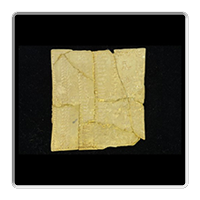

Reflectance Transformation Imaging (RTI) is a powerful tool used by modern-day historians to analyze the surface structure of many types of artifacts and mineral specimens. This imagery is created by individually shining dozens of tiny lights onto a surface, and stitching the photos together into an interactive experience that highlights subtle textures and features often unseen by the naked eye.
Instructions
Click/tap and drag to move the light direction.
Click/tap to quickly set the light direction.

Select a thumbnail to analyze a different view of the object.
Use the Back button to return to the object gallery.